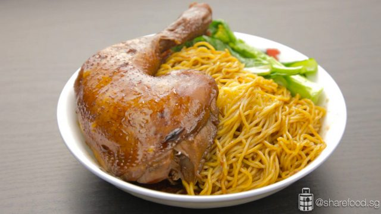

Soy Sauce Chicken Noodle

Ingredients
- 4 chicken legs Large-size. Skin not torn, wash and pat dry
- 2 tsp salt
- 1 tsp pepper
- 1 old ginger thumb length, unpeeled and sliced
- 10 cloves garlic unpeeled and smash lightly
- 3 stalks spring onion chop into 1 inch length
- 1 cinnamon bark
- 2 star anise whole
- 2 cups light soy sauce
- 1 1/3 cups superior dark soy sauce
- ¼ cup chinese rose wine or shao xing wine
- 6 cups hot water or as needed to cover the whole chicken
- 1 tsp salt to taste
- ½ cup sugar to taste
- 100 g Hong Kong noodles
- 25 g kai lan
- 1 tsp sesame oil
Instructions
-
Marinate the chicken leg In a small bowl, mix salt and pepper evenly.
Rub it on the chicken legs. Set aside.
-
In a pot, heat up 2 tbsp oil over medium heat. Fry ginger slices and
garlic cloves until fragrant. Add sugar and continue to fry until it is
fully melted.
Add in chopped spring onions, cinnamon bark, star anise, and fry for a
few seconds till it releases it's fragrances.
-
Pour in chinese rose wine, light soy sauce, dark soy sauce and hot water
to submerge the chicken. Add in more water and ensure that the chicken
legs can be fully submerged.
Turn up the heat and allow it to boil. Do a taste test, adjust with salt
and sugar to your preference.
-
Once the sauce starts to boil, add in the chicken legs. Once the sauce
return to a steady simmer, remove the chicken legs.
-
Turn up the heat and bring it to a boil again. Place the chicken legs
into the sauce for the 2nd time. Once the sauce return to a steady
simmer, remove the chicken legs.
-
Turn up the heat and bring it to a boil for the last time. Place the
chicken legs into the sauce for the 3rd time. When the sauce returns to
a steady simmer, turn off the heat.
Cover the pot with its lid,
and let the chicken steep for 45 mins.
-
45 mins later, to test whether the chicken leg is cooked: Insert a meat
thermometer into the thickest part of the thigh. If the temperature
reaches at least 75 degree C, it is cooked.
-
Lift out the chicken and set aside to drip dry. When the chicken has
cooled down, brush some sesame oil on the skin. Set aside.
- In a pot of hot water, blanch noodle and vegetables.
-
In a serving plate, add in the braising sauce, sambal chilli and sesame
oil. Mix well. Add in the noodle and give it a good stir. Place the
chicken leg and kai lan by the side and ready to serve.